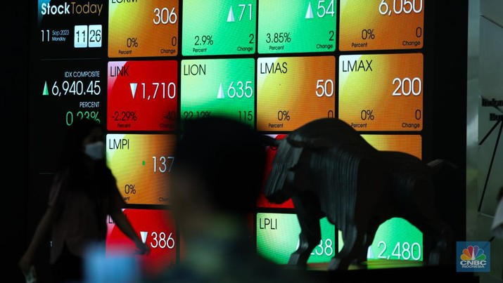

MARKET
IHSG Loyo 4 Hari Beruntun, 6 Saham Ini Jadi Biang Kerok Hari Ini
Foto: Layar digital pergerakan Indeks Harga Saham Gabungan (IHSG) di Gedung Bursa Efek Indonesia, Jakarta, Senin (11/9/223). (CNBC Indonesia/Tri Susilo)
Jakarta, CNBC Indonesia - Indeks Harga Saham Gabungan (IHSG) kembali ditutup melemah pada akhir perdagangan Senin (26/2/2024), di mana investor cenderung wait and seemenanti rilis data ekonomi penting di dalam negeri dan luar negeri pada pekan ini
IHSG ditutup melemah 0,15% ke posisi 7.283,82. Namun, IHSG masih bertahan di level psikologis 7.200 pada hari ini
"Nilai transaksi indeks pada akhir perdagangan hari ini mencapai sekitar Rp 8,6 triliun dengan melibatkan 17 miliaran saham yang diperdagangkan sebanyak 1,3 juta kali. Sebanyak 230 saham naik, 309 saham turun, dan 238 saham cenderung mendatar.
BACA: Net Buy Rp 3,72 Triliun, Asing Terciduk Malah Lego 10 Saham Ini
"Secara sektoral, sektor kesehatan menjadi pemberat terbesar IHSG pada akhir perdagangan hari ini, yakni mencapai 1,62%. Selain itu, sektor bahan baku juga menjadi penekan IHSG hari ini yakni sebesar 1,39%.
IHSG yang sudah terkoreksi selama empat hari beruntun karena investor masih melakukan aksi ambil untung (profit taking) sembari wait and see menanti rilis data ekonomi penting di dalam negeri dan global pada pekan ini.
Ekonom CIMB Niaga, Mika Martumpal mengatakan twin deficit kerap berdampak negatif ke pasar keuangan RI, meski faktor suku bunga dan prospek pertumbuhan global turut mempengaruhi stabilitas pasar. Senada dengan Mika Martumpal, Treasury Division Head BTN, Sindhu Rahadian Ardita menilai twin deficit sudah jamak dialami RI, namun upaya pemerintah mendorong hiliriasi berpotensi mendorong surplus transaksi berjalan sehingga twin deficit bisa semakin ditekan.